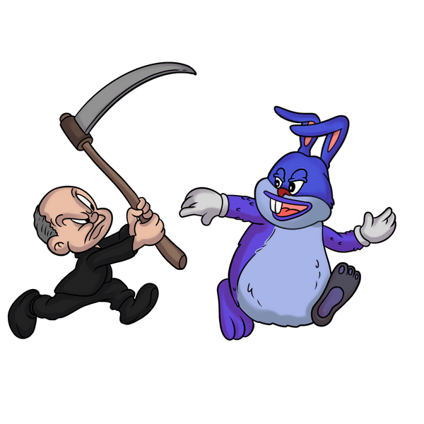

STORY
In Solooney Moons, Big Based Chungus plays a game, With Gary Gensler, the hunter, oh what a name! Crafty rabbit outsmarts clueless foe, In a tale of wit that steals the show. Hare-brained schemes, Big Thic pulls with glee, Leaving Gensler scratching, "How can this be?" Crypto cunning, regulatory plight, In this whimsical dance of day versus night. As the sun sets, Chungus hops out of sight, Leaving Gensler baffled, his mind takes flight. In Solooney Moons, this tale we tell, Of a clever rabbit who does excel!
